This is the single reference document. Part 1 defines every symbol and formula. Part 2 shows each figure with (i) the data it comes from, (ii) the exact definition of both axes, (iii) what every curve is, (iv) what the figure shows and does not show. Part 3 relates this to Lyapunov exponents, Part 4 separates trivial from non-trivial results, Part 5 lists null results, Part 6 is the data inventory.
One warning first. The system is non-autonomous: at every step the model reads a new token, so the update map changes with time. Lyapunov exponents, attractors and invariant measures are defined for autonomous maps; Part 3 explains what our numbers are and are not.
DeepSeek-R1-Distill-Qwen-1.5B, float32, one GPU, greedy decoding (temperature 0, no
sampling, no repetition penalty). Decoder-only Transformer, 28 blocks, hidden width $d=1536$.
A sliding attention window $W$ limits how far back a token can attend. It is part of the
attention mask, not of the weights.
| symbol | meaning |
|---|---|
| $P$ | number of prompt tokens (65 in most runs) |
| $T$ | number of generated tokens (300 unless stated) |
| $p_1,\dots,p_P$ | prompt token ids |
| $g_0,\dots,g_{T-1}$ | generated token ids of the unperturbed run |
| $e_p\in\mathbb{R}^d$ | input embedding of token $p$ |
| $h_{t,\ell}\in\mathbb{R}^d$ | residual-stream state at generated position $t$, output of block $\ell$ ($\ell=0$: embedding; $\ell=27$: last block, before the final norm) |
| $z_t\in\mathbb{R}^V$ | logits that predict token $t$ ($V\approx152$k) |
| $m_t$ | decision gap $=z_t^{(1)}-z_t^{(2)}$ (top-1 minus top-2) |
| $W$ | sliding-window size, in tokens |
| $r$ | perturbation radius (a length in embedding space) |
| $u$ | unit perturbation direction |
Decision gap. At step $t$ the model scores every vocabulary item; sort $z_t^{(1)}\ge z_t^{(2)}\ge\cdots$. The gap $m_t=z_t^{(1)}-z_t^{(2)}$ says how comfortably the top word wins. A word can change only if a perturbation makes $z^{(2)}$ overtake $z^{(1)}$.
Context length. When predicting $g_t$ the model has seen $P+t$ tokens. With window $W$, once $P+t>W$ the oldest tokens are invisible. That is the only way $W$ can change anything.
(A) Prompt perturbation ("A1"). Add the same vector to every prompt embedding: $$e'_{p_i}=e_{p_i}+r\,u_i,\qquad i=1,\dots,P,$$ where $u=(u_1,\dots,u_P)\in\mathbb{R}^{Pd}$ is a unit vector and $r$ its length. The 20 directions used in most runs form a simplex: each $u$ is supported on one coordinate per prompt position, and any two are nearly orthogonal. Nothing is added to generated positions. The model then runs teacher-forced (1.3) on the unperturbed token sequence.
(B) Single-position ("current-state") perturbation. Add a vector to one generated position: $$e'_{P+s}=e_{P+s}+r\,v,\qquad \|v\|_2=1,$$ with $v$ a fixed Gaussian direction (24 directions in the latest runs). This is what earlier texts called "kick" or "nudge". They are the same thing; from now on the word is perturbation.
(C) Window change. Keep the prompt and the exact token sequence; only change $W$. This isolates the effect of the attention mask, with no perturbation at all ($r=0$).
Free run: the model is fed its own output, $g'_t=\arg\max z_t(h'_0,\dots,h'_{t-1})$. Teacher-forced pass: the model is fed the baseline tokens $g_0,\dots,g_{T-1}$ at every position, so each position is evaluated on the same prefix; the token it would emit at step $t$ is $\hat g_t=\arg\max z'_t$.
Hidden-state response $$\delta h_{t,\ell}=h'_{t,\ell}-h_{t,\ell},\qquad a(t,\ell)=\|\delta h_{t,\ell}\|_2,\qquad q(t,\ell)=\frac{a(t,\ell)}{\|h_{t,\ell}\|_2}.$$ $a$ is an absolute length; $q$ is the same change as a fraction of the state's own length. Both appear in the figures; they answer different questions.
Logit response. With $i_1(t),i_2(t)$ the baseline top-1/top-2 indices, $$\delta m_t(u)=\big(z'^{(i_1)}_t-z'^{(i_2)}_t\big)-\big(z^{(i_1)}_t-z^{(i_2)}_t\big)=m'_t-m_t.$$ $\delta m_t<0$: the gap shrank. $\delta m_t>0$: it widened.
Flips $$T_{\text{free}}=\min\{t:g'_t\ne g_t\},\qquad T_{\text{tf}}=\min\{t:\hat g_t\ne g_t\}.$$ If no such $t$ exists we report $-1$ ("no flip in 300 tokens").
Local threshold. A flip at $t$ needs $z'^{(2)}_t\ge z'^{(1)}_t$, i.e. $$\delta m_t\le -m_t .$$ Because the response is proportional to $r$ in the linear regime, the smallest radius that flips the word at $t$ in direction $u$ is $$r_c(t,u)=\frac{m_t}{\max\!\big(-\delta m_t(u)/r,0\big)}=\frac{m_t\,r}{\max(-\delta m_t(u),0)},$$ and the predicted first flip is $$\hat T(r,u)=\min\{t:r\ge r_c(t,u)\},\qquad r_*(u)=\min_t r_c(t,u).$$ Only a negative shift counts. Replacing $\delta m$ by $|\delta m|$ ("sign-blind") predicts flips where the gap is widening; Part 2 quantifies the damage.
Two prediction modes. Measured-at-$r$: compute $\delta m$ with a teacher-forced pass at the same $r$ you want to predict. Extrapolated: compute $\delta m$ at a small $r$ and scale linearly. The first is a measurement, the second is a model; they behave very differently for $r>0.3$.
Survival $$S=\frac{T_{\text{free}}}{T}.$$ It is the fraction of the unperturbed answer that is reproduced, because after the first difference the texts never re-converge (measured 0/75).
Window departure. For two runs with the same tokens and windows $W_1
Depth and non-normality. For fixed $t$, $a(t,\ell+1)/a(t,\ell)$ is the local gain. For a fixed position the tangent map is $J_\ell=\partial h_{\ell+1}/\partial h_\ell$; $\sigma_{\max}(J_\ell)$ is its largest singular value, $\rho(J_\ell)$ its spectral radius, $\kappa=\sigma_{\max}/\rho$.
Correlation dimension (Part 2.G). For $N$ states $x_i$,
$$C(\varepsilon)=\frac{2}{N(N-1)}\sum_{i
Finite-time growth rate $$\lambda(t)=\frac1t\log\frac{\|\delta h_t\|}{\|\delta h_0\|}.$$ It is a finite-time stretching rate along one trajectory, not a Lyapunov exponent (Part 3).
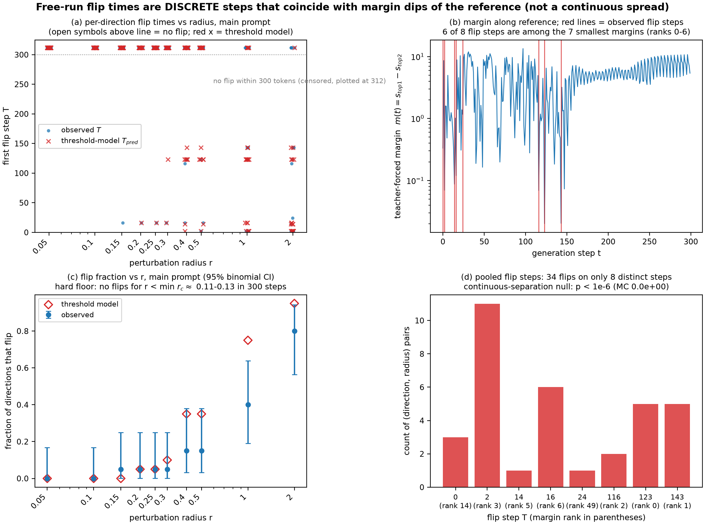
The question. Does a perturbed generation diverge because infinitesimal differences grow exponentially (ordinary chaos), or because a finite perturbation crosses a local decision boundary after shadowing the original for a long time (stable chaos / flux tubes)?
Definitions. For one prompt, one window and one radius $r$, run $n=20$ directions.
$T$ is the first generated token that differs from the unperturbed reference ($T=\infty$ if none
within 300 tokens). The survival curve is $S_r(t)=P(T>t)$, estimated as the fraction of
directions with $T>t$. The threshold field $r_c(u,t)$ is computed from one teacher-forced pass
(margin over margin shrink, B1) and predicts a flip at the first $t$ with $r_c(u,t) Panel (a). All 34 flips of the main prompt, as (radius, flip step). Panel (b). The flip
steps against the baseline margin at those steps. Panel (c). Calibration. Reading. The 34 flips land on 8 steps only — $\{0,2,14,16,24,116,123,143\}$ — and those are
the lowest-margin steps of the reference (ranks 0,1,2,3,5,6 among 300). A continuous-separation
null would give ≈32 distinct steps; the probability of ≤8 distinct steps under that null is
$p<5\times10^{-6}$ (Monte Carlo, $2\times10^5$ draws). Direction 10 flips at the same step 16
for $r=0.15,0.2,0.25$, whereas exponential separation would move the flip time by
$\approx b\ln(0.25/0.15)\approx25$ tokens over that range. 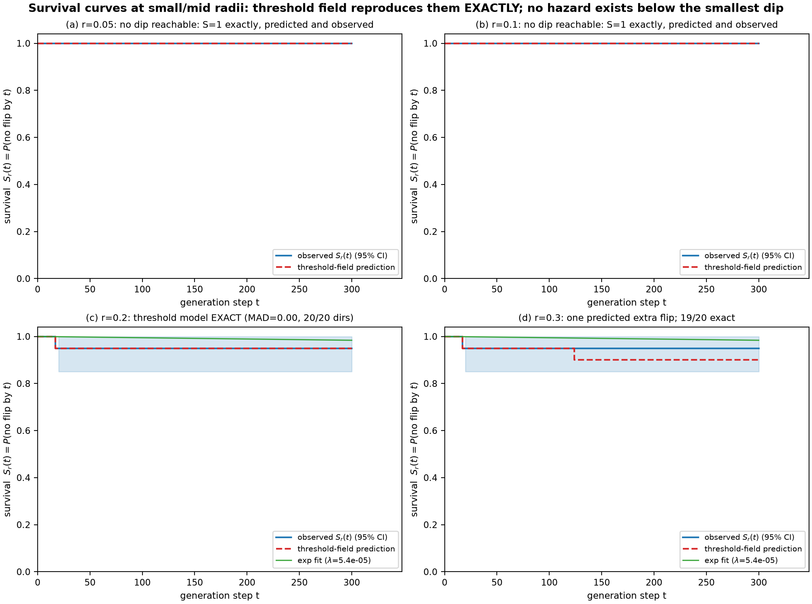
Axes. $x$: generation step $t$. $y$: $S_r(t)=P(T>t)$ over 20 directions (free y-axis per panel so the steps are visible). Blue: observed. Red dashed: prediction from the threshold field, with zero fitted parameters.
Reading. For $r=0.05$ and $0.1$ no dip is reachable and both curves are exactly 1: nothing flips. At $r=0.2$ the single flip is predicted at the same step. At $r=0.3$ the model predicts one extra flip (19/20). At $r=0.5$ and $1$ the model predicts more flips than observed — it over-fires, one-sidedly, because the real perturbation contracts slightly instead of growing. So the threshold field describes the discrete steps correctly, but at large $r$ it is an over-estimate, never an under-estimate.
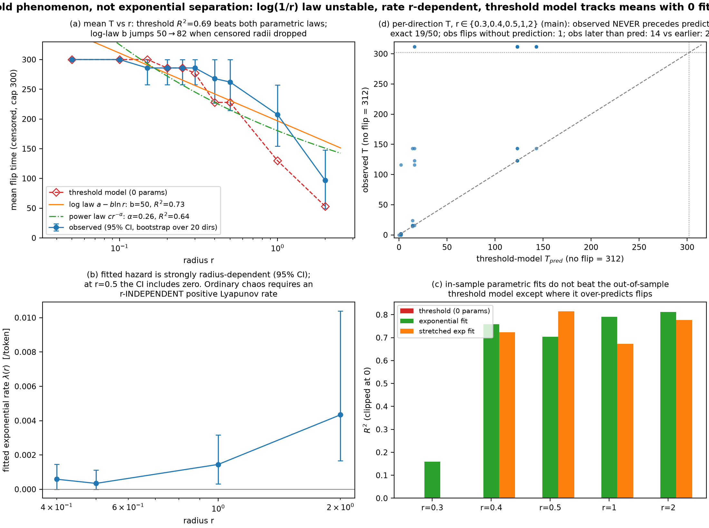
Axes and content. (a) mean flip time $\langle T\rangle$ vs $r$; (b) the same on log axes with the $\log(1/r)$ law; (c) per-direction observed vs predicted flip step; (d) the fitted exponential hazard $\lambda(r)$ with bootstrap confidence intervals.
Reading — the exponential-separation hypothesis is rejected by four independent tests. 1. Flip times are discrete (previous figure), not smoothly distributed. 2. The fitted hazard is radius-dependent by ~90× — $\lambda(r)=5\times10^{-5}$ at $r=0.2$–$0.3$ up to $4.3\times10^{-3}$/token at $r=2$, with confidence intervals that include zero for $r\le0.5$. Ordinary chaos requires one $r$-independent positive rate. 3. The perturbation never amplifies: $\|\delta h_{27}(50)\|/\|\delta h_{27}(1)\|=0.70$–$1.02$ for $r=0.01$–$2$; it is flat-to-contracting, then decays as the perturbed position leaves the window. 4. A hard floor: the smallest critical radius in 300 steps is $r_c^{\min}\approx0.13$, and 0 of 40 runs flip at $r\le0.1$. A positive Lyapunov exponent would make any infinitesimal perturbation separate eventually.
The $\log(1/r)$ law is also quantitatively unstable: its slope $b$ is 49.5 (95% CI 36–64) over all radii but 80.6 when the fully censored radii are dropped, and the implied rate $1/b=0.02$/token exceeds every directly fitted hazard by 5–400×. The parameter-free threshold prediction tracks the same means better (MAD 21.8 vs 25.3 tokens).
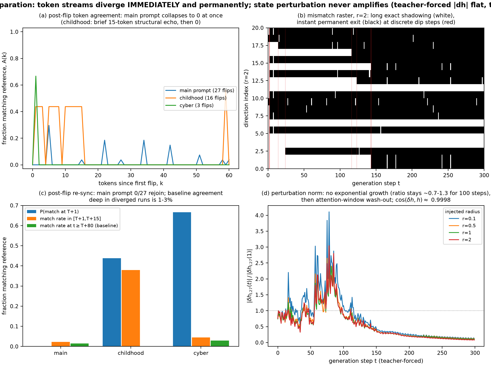
Axes. (a) token agreement with the reference after the first flip, as a function of tokens since the flip. (b) mismatch raster. (c) perturbation norm vs step.
Reading. Inside the tube the two runs are identical (same tokens, non-growing state distance). The exit is abrupt and permanent: after the first flipped token the main-prompt runs never rejoin the reference ($P(\text{rejoin at }T+1)=0/27$), with only a brief ~15-token structural echo on the childhood prompt. This is the "flux tube": exact shadowing, then a sudden exit at a decision boundary.
Error asymmetry. Across all tests the threshold model over-fires 26 times and misses once (sign test $p=4.2\times10^{-7}$); where both fire, the free run flips later than predicted in 14/16 cases. The real system is slightly more contractive than the teacher-forced linearisation — the opposite of amplification.
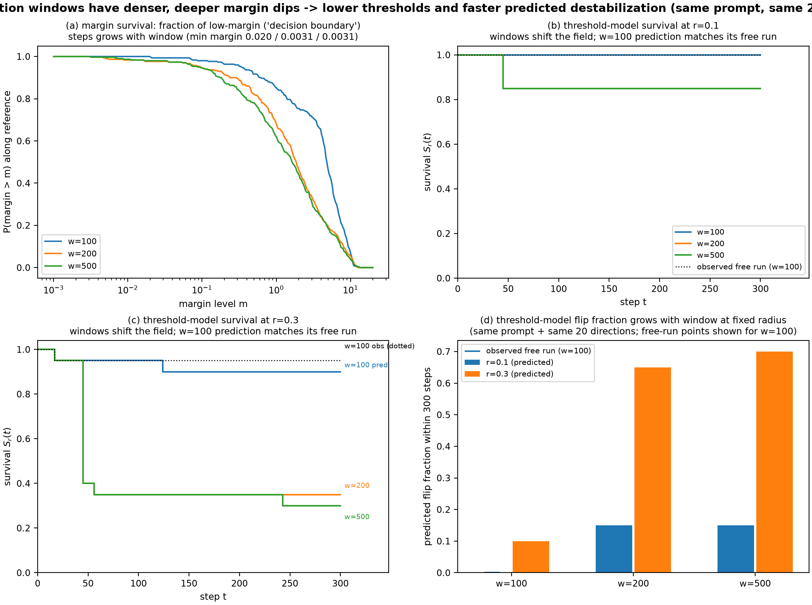
Reading. Longer windows lower and multiply the margin dips: $\min m_t$ goes 0.0202 ( $W=100$ ) → 0.0031 ( $W=200,500$ ), and the predicted flip fraction at $r=0.3$ rises 0.10 → 0.65 → 0.70. The mechanism is unchanged; only the boundary field moves. This is the architectural dependence the project set out to measure.
Verdict. The system is in the stable-chaos / flux-tube regime. There is no positive Lyapunov exponent at these scales: trajectories shadow each other exactly until a finite perturbation crosses a local margin threshold, at a step and for a direction that one teacher-forced pass predicts without fitting.
Caveats. 300-token horizon, greedy decoding, three prompts. "Permanent plateau" means "no reachable dip remains within the horizon". The teacher-forced linearisation over-fires at mid/large radii because the real perturbation contracts slightly.
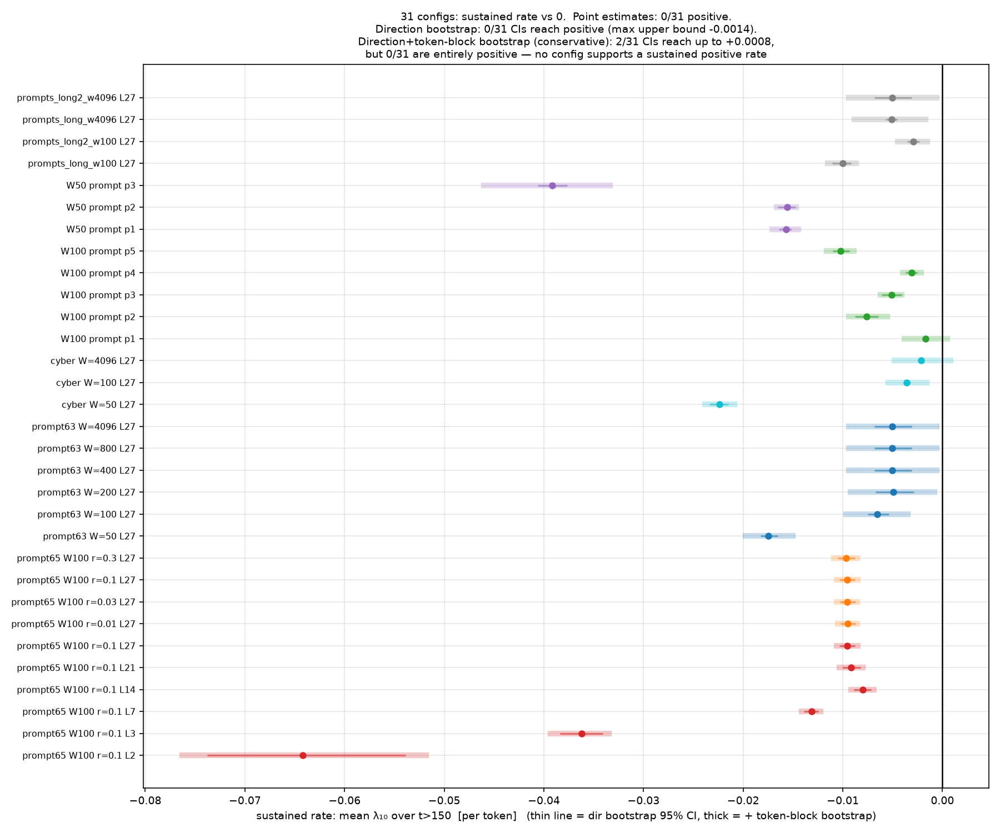
Data. 31 configurations: 7 layers, 12 radii, 6 windows × 2 prompts, 12 independent prompt runs. For each, the sustained rate is the mean of $\lambda_{10}(t)=\frac{1}{20}\log\frac{a(t+10)}{a(t-10)}$ over $t>150$.
Axes. $x$: sustained rate in nats/token. Thin line: 95% bootstrap CI over directions. Thick line: conservative two-way bootstrap (directions + token blocks of 10). The black line is zero.
Reading. 0 of 31 point estimates are positive (range −0.039 to −0.002). 0 of 31 direction-bootstrap CIs touch zero (largest upper bound −0.0014). With the conservative bootstrap, 2 of 31 CIs reach +0.0008, but none is entirely positive. A sustained rate $\ge+0.001$/token is excluded everywhere. The best-estimate "Lyapunov-like" number is −0.0043 nats/token, CI [−0.0055, −0.0030].
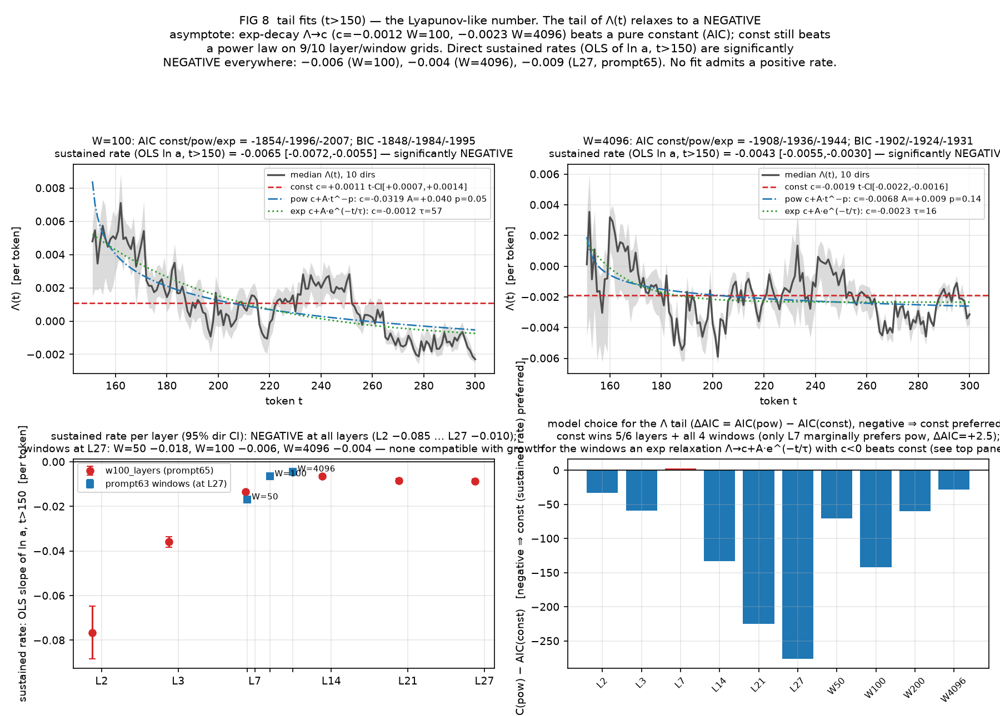
Reading. Fit of the tail: an exponential relaxation to a negative asymptote wins on the windows, and a constant negative rate beats a power law on 9 of 10 layer/window grids. The asymptote is −0.004 to −0.011 per token, with CIs excluding zero from above.
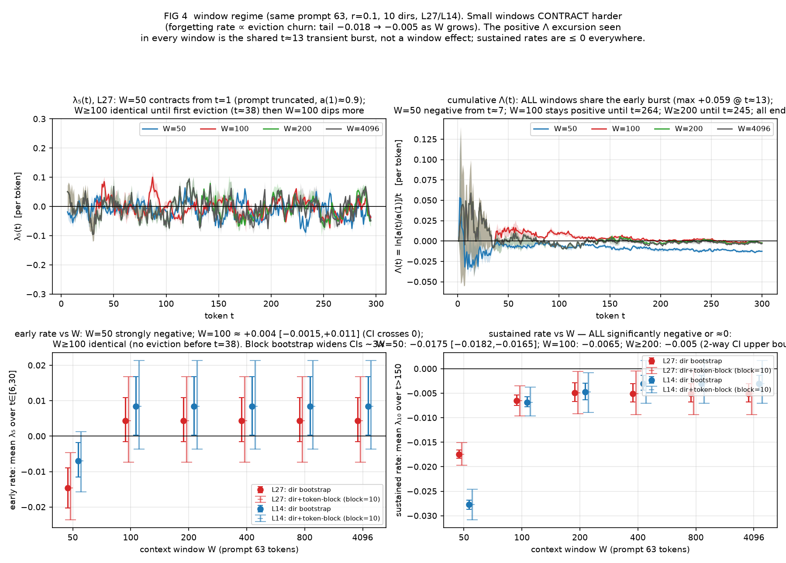
Reading — the window is a forgetting rate. The sustained contraction scales with the eviction churn: $W=50$ gives −0.0175 [−0.0182, −0.0165], $W=100$ −0.0065, $W\ge200$ ≈ −0.005. The only early-rate CI that includes positive values is $W=100$'s +0.0109 [−0.0001, +0.0221], and it is gone by the tail. There is no growth phase: the response rises for exactly one token, then decays.
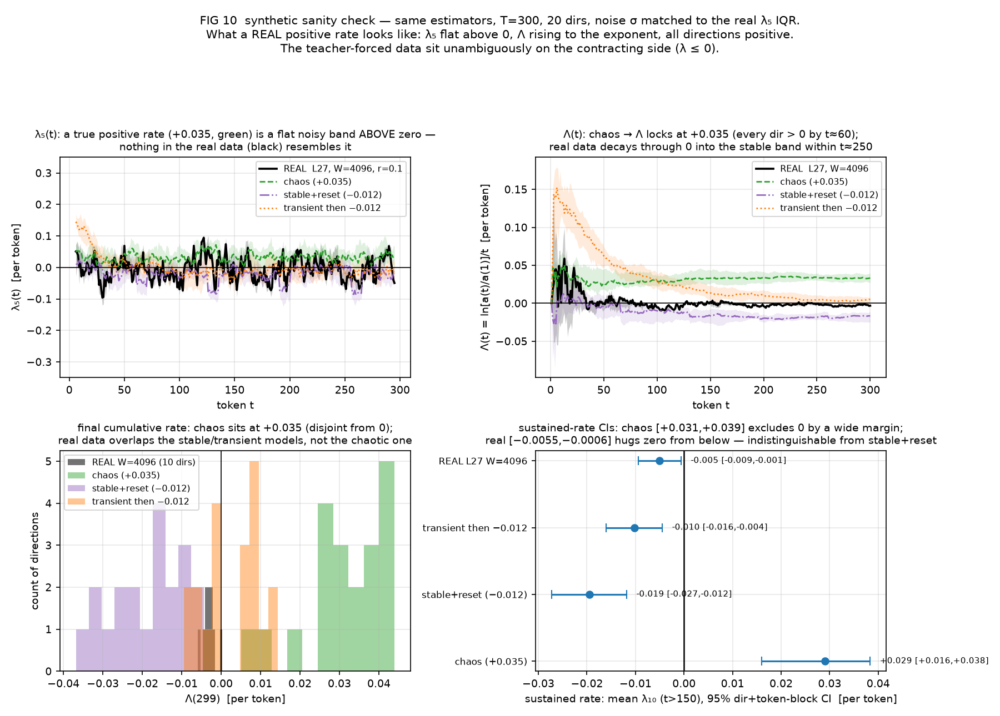
Control. A synthetic expanding map with a genuine rate of +0.035/token and noise matched to the real data gives a CI of [+0.016, +0.038] — unmistakable in the same pipeline. The real data's CI [−0.0094, −0.0006] sits in the contracting-with-reset family. This is the strongest statement we can make about Lyapunov exponents: there is no positive one detectable here, and the method would have found it.
Jensen check. The gap between the mean of per-direction rates and the rate of the mean curve is −0.0005/token, about 6× smaller than the bootstrap noise; 0 of 20 individual directions have a positive sustained rate.
Data. One 4000-token greedy trajectory (history of computing), prompt perturbation $r=0.1$,
4 directions, teacher-forced along the full sequence with run_a1_long (base model + lm_head
only at generated positions, so the [L,V] logits are never materialised).
Panel (a). $x$: $t$ (log); $y$: $a(t,\ell)$ for four layers.
Panel (b). $\Lambda(t)=\frac1t\log\frac{a(t)}{a(1)}$.
Reading. The rate is positive in the first ~20 tokens (up to +0.14 at layer 27), then settles negative and stays negative: −0.0075 at $t=1000$, −0.0069 at $t=4000$. There is no turn-around within the longest horizon we can run. This is the strongest available statement about a Lyapunov exponent: none is detectable up to 4000 tokens.
Technical note. Long sequences are now routine: 4000 teacher-forced tokens take ~13 s for 2 directions and ~10 GB of VRAM.
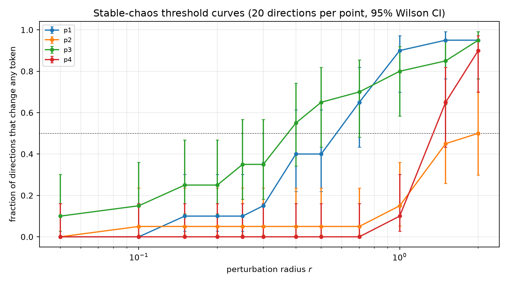
Data. 4 prompts, 20 shared directions, 12 radii from 0.05 to 2, 300 generated tokens, free-running greedy. A direction "flips" if any generated token differs from the unperturbed run.
Axes. $x$: perturbation radius $r$ (log). $y$: fraction of the 20 directions that flip. Bars: 95% Wilson interval for a binomial proportion.
Reading. The flip fraction is a sigmoid in $r$, with a prompt-dependent threshold: the first radius above 50% flips is 0.4 (p3), 0.7 (p1), and 1.5 (p4); p2 does not reach 50% within the tested range. At $r\le0.1$ every prompt is below 15%. This is the population-level version of the single-configuration result: a finite radius is needed, and the threshold is not universal.
Why it matters. Exponential instability has no radius threshold: any $r>0$ eventually flips. The existence of a prompt-dependent finite threshold, plus the sigmoid shape, is the macroscopic signature of the stable-chaos regime.
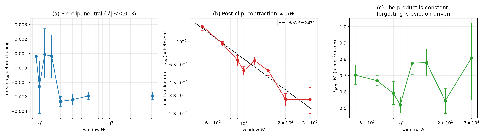
Data. 6 prompts × 10 windows × 3 radii × 12 directions, 400 tokens, 600 direction-runs.
For each run the local rate $\lambda_{10}(t)$ is averaged before clipping ($t
Panel (a). Pre-clip mean rate vs $W$ (only windows where all prompts have a pre-clip interval), 95% bootstrap CI over directions.
Panel (b). Post-clip contraction rate $-\lambda_{10}$ vs $W$ (log–log), with the fitted $A/W$.
Panel (c). The product $-\lambda_{\text{post}}\cdot W$.
Reading — two clean statements. 1. Before clipping the system is neutral: the rate is between −0.0023 and +0.0009 nats/token for every window from 90 to 4096, with CIs that include zero. All the apparent window dependence in a naive comparison comes from where the clip falls, not from the pre-clip dynamics. 2. After clipping the contraction rate is eviction-driven: $$-\lambda_{\text{post}} \;\approx\; \frac{A}{W},\qquad A=0.67\pm0.11 .$$ The product $-\lambda_{\text{post}}W$ is constant (panel c). A larger window forgets the perturbation more slowly, exactly as if each generated token had probability $\propto1/W$ of evicting the perturbed context.
This replaces the earlier, confounded comparison (N6): the "regime" at $W 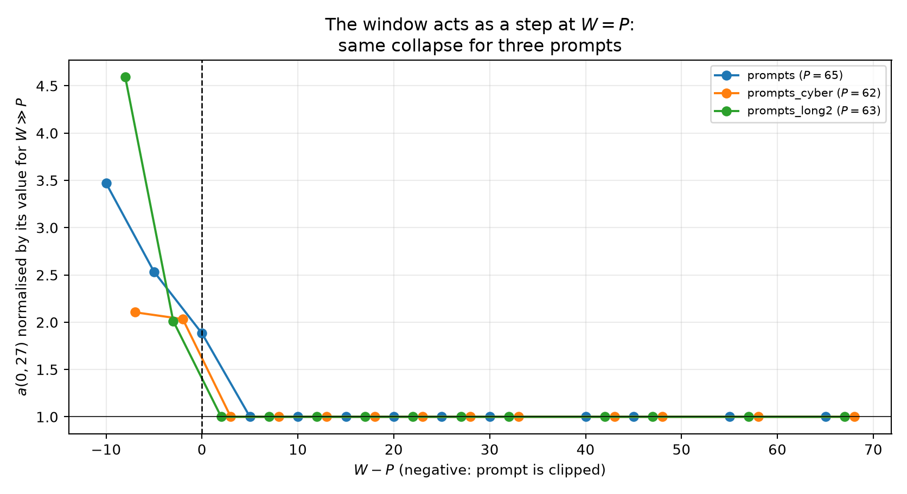
The boundary is a step at $W=P$. Fine scan $W=55\ldots130$ for three prompts ($P=65,62,63$), $r=0.1$, 6 directions, layer 27.
Axes. $x$: $W-P$ (negative means the prompt is already clipped). $y$: the immediate response $a(0,27)$ normalised by its saturated value at $W\gg P$.
Reading. The curves for the three prompts collapse onto one: for $W-P\ge5$ the response is flat (ratio 1), and below it the response rises steeply, to 2.1–4.6× at $W-P=-10$. The transition is within a few tokens of $W=P$. So the window is a step function of $W-P$ for prompt perturbations; there is no gradual regime.
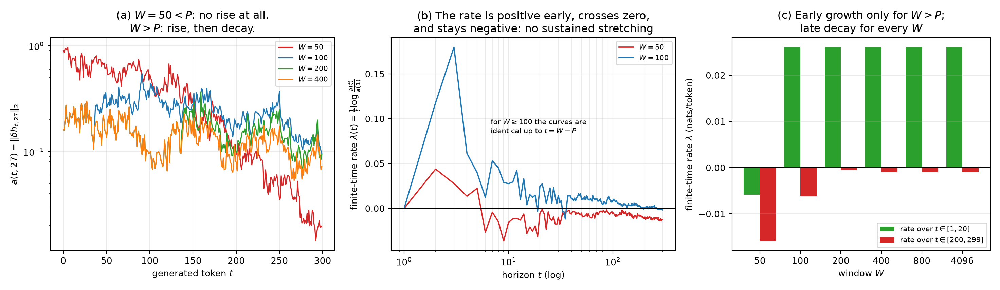
Data. Ocean-currents prompt ($P=63$) and cybersecurity prompt ($P=62$); one fixed 300-token sequence each; prompt perturbation $r=0.1$, 10 directions, teacher-forced, layer 27; windows $W=50,100,200$.
Panel (a)/(c). $x=t$; $y=a(t,27)=\|\delta h_{t,27}\|_2$ (log). Panel (b)/(d). $x$: horizon $t$ (log); $y$: $\lambda(t)=\frac1t\log\frac{a(t)}{a(1)}$.
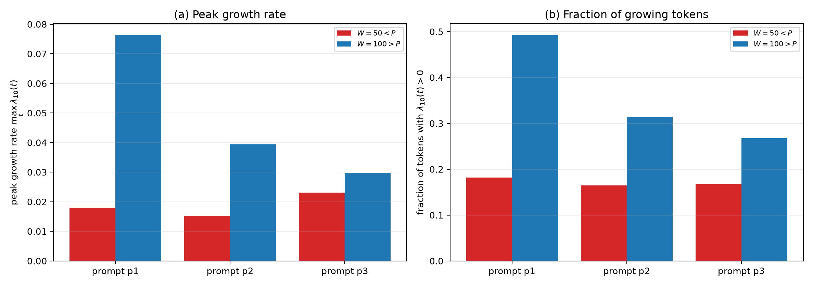
Data. Five prompts at $W=100$ and three of them at $W=50$ (same protocol, 8 directions); local rate over 20-token windows, $\lambda_{10}(t)=\frac{1}{20}\log\frac{a(t+10)}{a(t-10)}$.
Reading — the window changes the growth regime, quantitatively.
- At $W=50
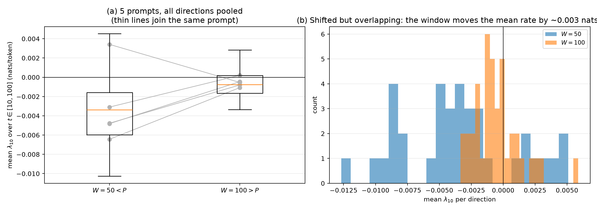
The same comparison with the full distribution. Data: 5 prompts measured at both windows, every direction, mean of $\lambda_{10}$ over $t\in[10,100]$.
Panel (a). Points: prompt means; box: distribution over all directions; thin lines join the same prompt across windows. Panel (b). The two distributions.
Reading. The distribution shifts by ≈0.003 nats/token (means −0.0034 vs −0.0005; Mann–Whitney $p=1.7\times10^{-4}$ over 36 vs 40 direction-means). The distributions overlap: this is a consistent shift, not a clean separation. Given the confounding of the interval with the clip time (N6), the correct claim is "the window changes the early-time stretching rate by a measurable but small amount", not "there are two distinct dynamical regimes".
Pre-clipping control: there is no window effect before the context reaches $W$.
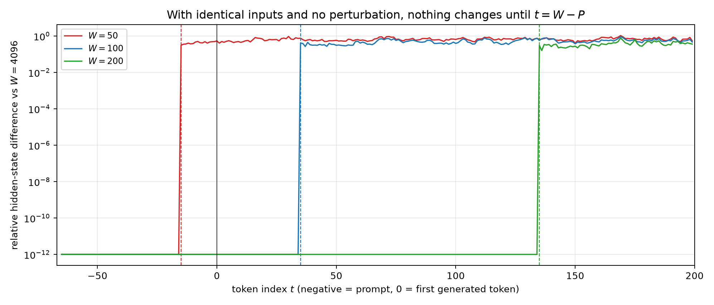
Data. Same prompt, same 200 tokens, no perturbation ($r=0$); hidden states compared across $W=50,100,200,4096$ at layers 1/7/14/27.
Axes. $x$: token index (negative = prompt). $y$: relative difference $\|\delta h\|/\|h\|$ between the run at $W$ and the run at $W=4096$ (log).
Reading. The difference is exactly zero (1e−12, float32 round-off) until $t=W-P$, then
jumps to order 1. For $W=50$, the first difference appears at position 50 — inside the prompt —
because the prompt itself is longer than the window. So with this protocol the window has no
effect at all before the context reaches it. (If an earlier experiment showed otherwise, the
likely causes are a different use_sliding_window setting, a model whose window is baked into
the mask at all lengths, or mixed precision; the control above excludes all of them for this
implementation.)

Data. Inject a perturbation of size $r=0.05$ into the residual stream at one layer $L$
and one position, then read the response at every layer $\ell>L$. 6 directions; HF convention:
hidden_states[l] is the input of block $l$, so the perturbation first appears at $\ell=L+1$.
Left: position $s=50$ (an ordinary position). Middle: $s=16$ (a position with a small gap).
Right: total gain at the last layer vs injection layer.
Axes. $x$: layers after the injection $\ell-L$ (log). $y$: $a(\ell)/r$, the response relative to the injected size. A value of 1 means "no amplification, no decay".
Reading — and the reconciliation of three earlier, apparently contradictory statements. - At an ordinary position ($s=50$) a local perturbation never amplifies: the gain is 0.5–1.25, i.e. it decays slightly with distance. Injecting later leaves less distance to decay, hence the mild upward trend with $L$. - At a sensitive position ($s=16$) the same perturbation is amplified ≈3×, and the growth happens mostly in the last layers (the curves bend upward at $\ell-L\gtrsim10$). - The earlier "depth gain $A(\ell)\propto\ell^{0.64}$" (A4) is a different object: it is the response at generated positions to a perturbation applied to all prompt tokens, so it measures how much prompt content each depth integrates, not the amplification of a local kick. The earlier "all growth in layer 1" came from the depth-FSLE / same-position product and from the state-norm jump at the embedding→residual transition; it is not the gain of a perturbation.
Answer to "first or last layers?" For a local perturbation: neither at an ordinary position (no gain), the last layers at a sensitive position. For a prompt-wide perturbation: the response grows with depth because deeper layers see more of the prompt, not because any single block amplifies.
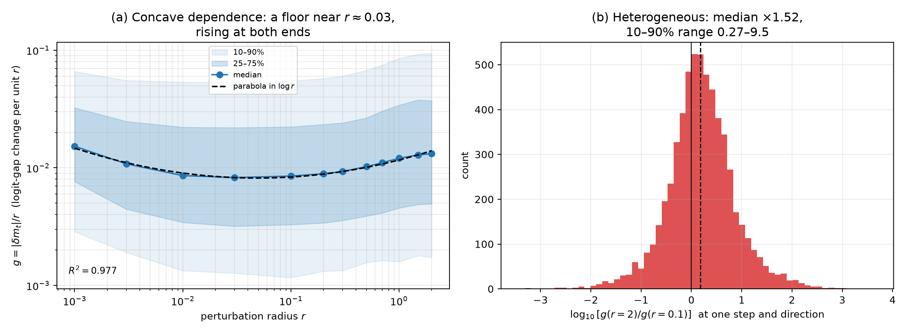
Data. All 12 radii, 20 directions, 300 steps; teacher-forced margin changes. $g(r)=|\delta m_t|/r$.
Panel (a). Median over all (direction, step) pairs, with 25–75% and 10–90% bands, and a quadratic fit in $\log r$ (not a power law).
Reading. The dependence is concave: $g$ falls from $1.5\times10^{-2}$ at $r=10^{-3}$ to a floor of $8.3\times10^{-3}$ around $r\approx0.03$, then rises to $1.3\times10^{-2}$ at $r=2$. A quadratic in $\log r$ fits with $R^2=0.977$; a single power law cannot describe both ends. The left rise is the float32 floor (noise$/r$), the right rise is genuine superlinearity.
Panel (b). Distribution of $g(2)/g(0.1)$ over all (step, direction) pairs.
Reading. The superlinearity is heterogeneous: median ×1.52, but the 10–90% range is 0.27–9.5. It is a global tendency, not a property of a few close calls. Consequence: a threshold measured at small $r$ is unbiased only up to $r\approx0.3$; beyond that the correction is step-dependent and cannot be captured by one exponent.
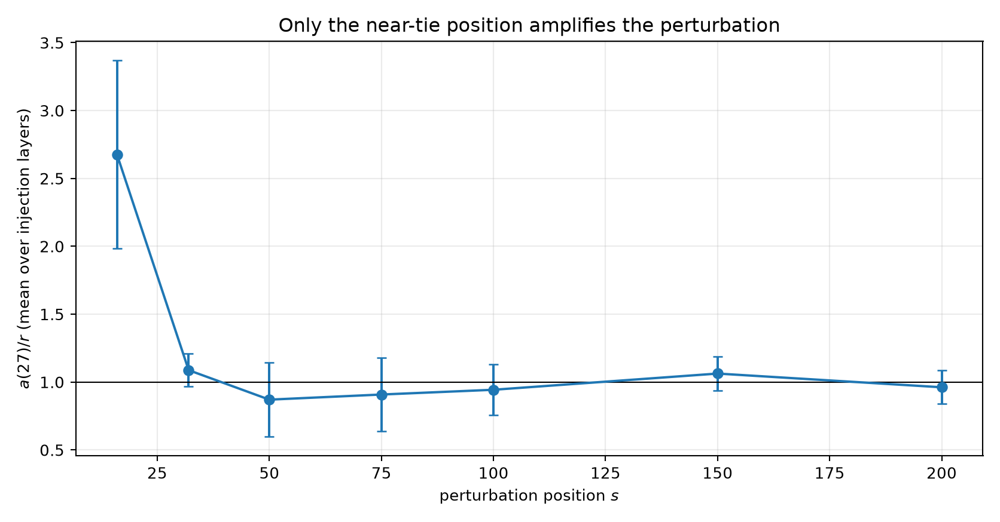
Data. Layer probe at seven positions ($s=16,32,50,75,100,150,200$), 6 directions, $r=0.05$, 9 injection layers (0–27).
Axes. $x$: perturbation position $s$. $y$: $a(27)/r$, averaged over injection layers; bars: standard deviation across injection layers.
Reading. Only $s=16$ amplifies (2.68, sd 0.7). Every other position is between 0.87 and 1.09 — no net amplification. $s=16$ is the sixth-smallest margin of the 300 steps ($m=0.12$). Caveat: seven positions is a small sample; the margin–gain relation is suggestive, not proven.
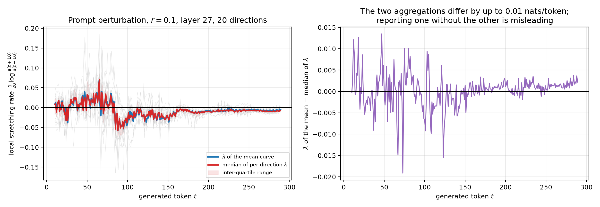
Data. Prompt perturbation, $r=0.1$, layer 27, 20 directions, $W=100$, 300 tokens.
Panel (a). $x$: $t$; $y$: the local stretching rate over a 20-token window, $$\lambda_{10}(t)=\frac{1}{20}\log\frac{a(t+10)}{a(t-10)},$$ which does not depend on a reference point. Thick blue: computed on the mean curve; thick red: median over directions; band: inter-quartile range; thin grey: individual directions.
Panel (b). Difference between the two aggregations.
Reading. $\lambda_{10}(t)\approx0$ for $t<20$, rises to +0.03 nats/token around $t=50$, then drops sharply negative at $t\approx100$ (the first window flush) and stays at −0.007. Only 21% of tokens have a positive rate. The two aggregations differ by up to 0.01 nats/token, so both must be reported: "mean of the rates" and "rate of the mean" are different objects (Jensen).
The cumulative version used in N1(b) is $\lambda(t)=\frac1t\log\frac{a(t)}{a(1)}$; it is positive
for the first ~10–40 tokens for $W>P$ and negative from the start for $W This is the closest legitimate analogue of a Lyapunov exponent here: a finite-time stretching
rate with a stated horizon and reference point. It is not an asymptotic exponent, because the map
changes every step (Part 3). 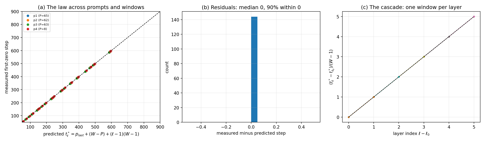N5. Window flush: an exact, predictive law
Data. 4 prompts ($P=65,62,63,8$), windows $W=60,80,100,120,150,200,250,300,400,500$, 600 generated tokens, layers 1–6, 6 directions, $r=0.1$. 240 (prompt, window, layer) measurements. $t^*_\ell$ is the first generated token where the layer-$\ell$ response is exactly zero; $p_{\mathrm{last}}$ is the largest prompt position carrying a nonzero perturbation.
Panel (a). Measured $t^*_\ell$ vs the prediction $$t^*_\ell=p_{\mathrm{last}}+(W-P)+(\ell-1)(W-1).$$ Panel (b). Residuals (measured − predicted). Panel (c). Collapse of the layer cascade.
Reading. All 240 points lie on the identity line: median residual 0, 90% of residuals 0. The law holds for a 8-token prompt as well as a 65-token one, across a factor-8 range of windows, and for six layers. This is a deterministic, exactly predicted quantity — there is no residual distribution to show because there are no residuals.
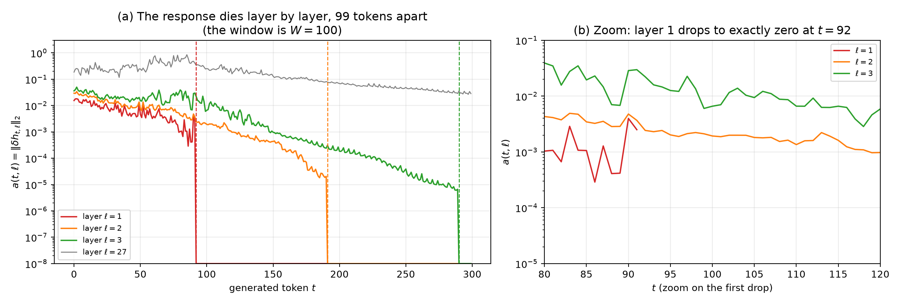
The earlier single-window picture, for reference: layers 1, 2, 3 die at 92, 191, 290 (spacing 99), while layers 7+ keep a non-zero response for the whole run because they also carry the perturbation through the generated positions themselves.
Mechanism. A perturbed prompt token at position $p$ is visible to a query at $q$ only while $p\ge q-W+1$. Layer 1 dies at the first $q$ where the last perturbed prompt token is out of reach ($t=q-P=p_{\mathrm{last}}+W-P$). Each deeper layer is fed by the previous layer's last surviving state, which stays visible for $W-1$ more tokens.
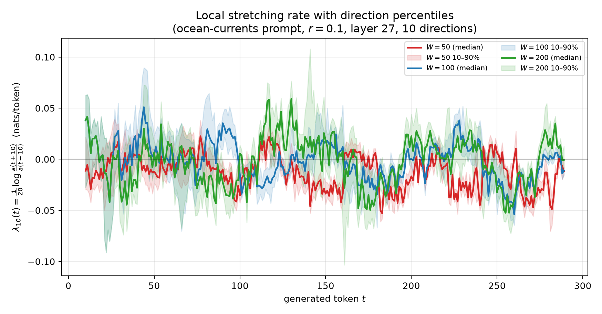
Data. Fixed-token runs on the ocean-currents prompt, $r=0.1$, layer 27, 10 directions, windows $W=50,100,200$. The local rate is $$\lambda_{10}(t)=\frac{1}{20}\log\frac{a(t+10)}{a(t-10)}.$$
Axes. $x$: $t$. $y$: $\lambda_{10}$ in nats/token. Thick line: median over directions. Band: 10–90% over directions.
Reading. The rate fluctuates strongly from token to token; the direction spread is comparable to the mean. Averaged over a long interval the differences are significant (next figure), but any single-token statement is noise-dominated.
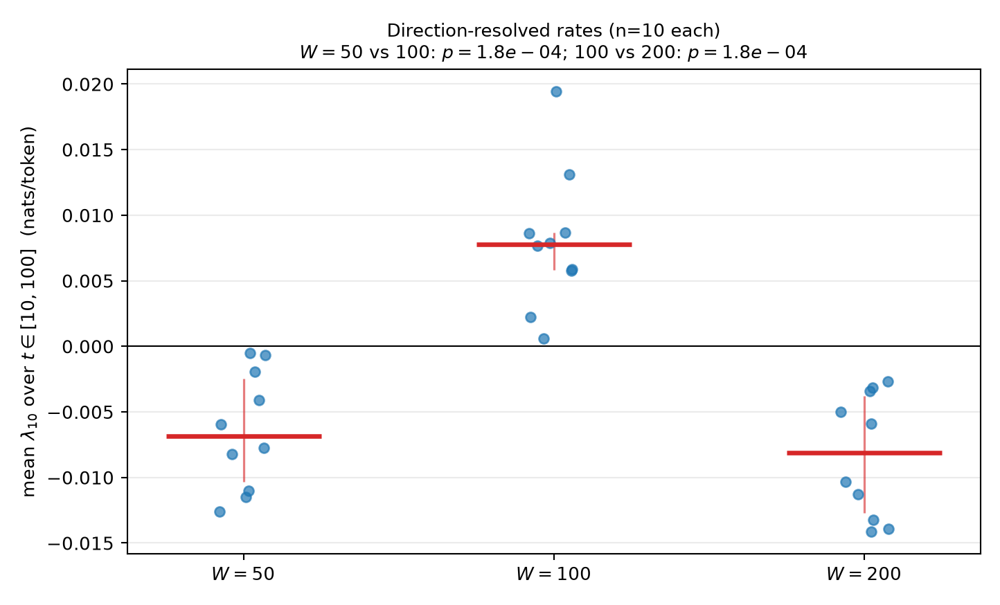
Data. For each direction, the mean of $\lambda_{10}$ over $t\in[10,100]$; 10 directions per window. Points: directions; red line: median; bar: inter-quartile range.
Reading. $W=100$ gives a positive mean rate (+0.008 nats/token), while $W=50$ and $W=200$ give negative means (−0.007 and −0.008). Mann–Whitney $p=1.8\times10^{-4}$ for both comparisons. The effect is real and directional, but see the confound below before interpreting it as a "regime".
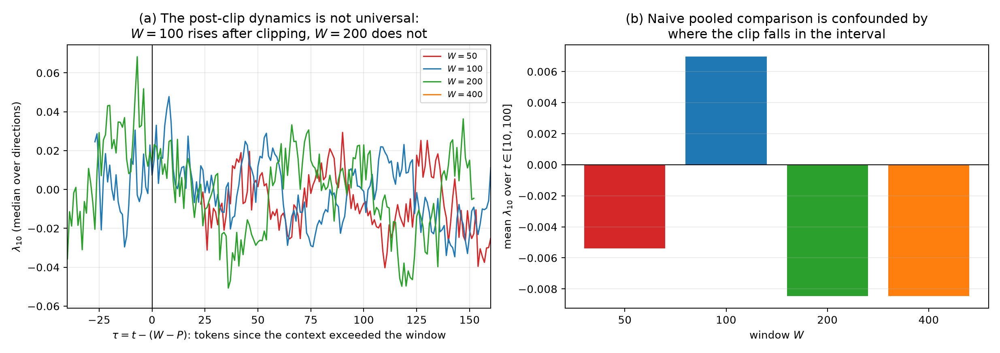
The confound. Panel (b) compares the same fixed interval $t\in[10,100]$ for four windows. But the window starts clipping at $t=W-P$: 0 for $W=50$, 37 for $W=100$, 137 for $W=200$, 337 for $W=400$. So the interval contains a different mix of pre-clip and post-clip behaviour for each $W$; the comparison is not like-for-like.
Panel (a) aligns the curves by $\tau=t-(W-P)$, the time since the context exceeded the window. The curves do not collapse: after its clip, $W=100$ rises (the response gains from the newly truncated context), while $W=200$ keeps decaying. That is a genuine dynamical difference, not just a time shift.
Consequence for the analysis. Any statement about "the window changes the rate" must specify (a) the interval, (b) whether that interval is pre- or post-clip, and (c) the aligned time $\tau$. The clean comparisons are: pre-clip (all $W>P$ identical), and post-clip at fixed $\tau$.
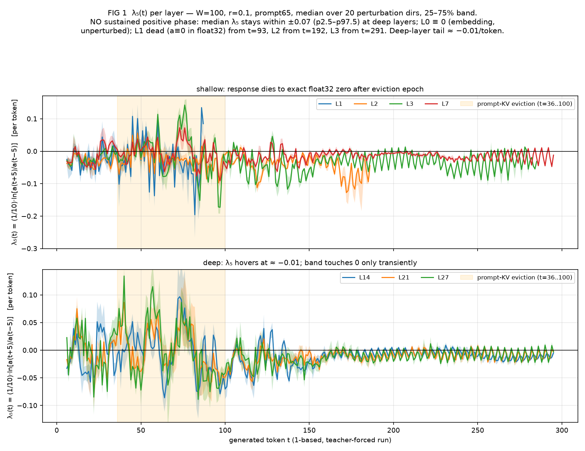
Layer dependence. $\lambda_5(t)$ for shallow (1,2,3,7) and deep (14,21,27) layers, median and 25–75% band. The shallow layers die to exact zero at $t=93/192/291$ (the flush cascade). Deep layers stay near $-0.01$ per token with only transient excursions. There is no depth at which the sustained rate is positive.
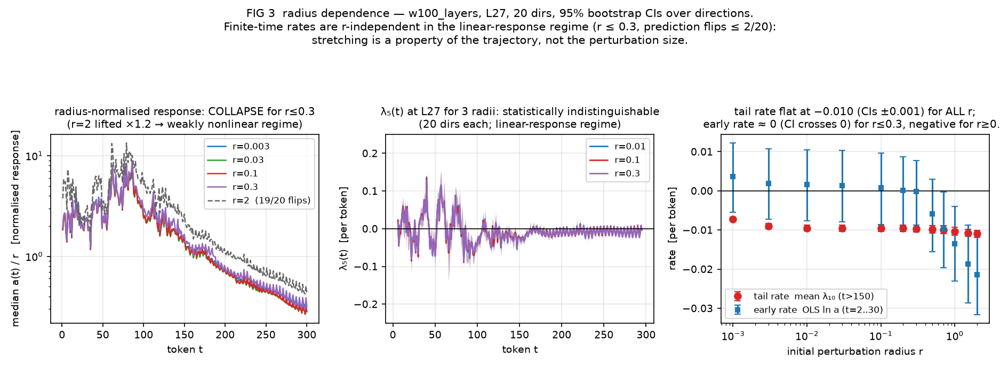
Radius dependence. In the linear regime the curves collapse: the tail rate is $-0.010\pm0.002$ for every radius from $10^{-3}$ to $0.3$. A rate that depends on the perturbation size is not a Lyapunov exponent; here the only radius dependence is the nonlinear onset above $r\approx0.3$.
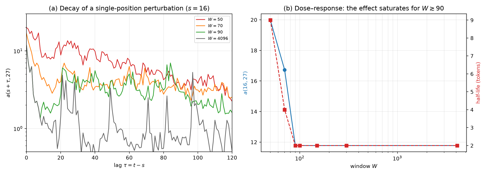
Data. Single-position perturbation at $s=16$, $r=0.1$, 16 directions, teacher-forced, same prompt; the window is overridden to $W=50,70,90,100,150,300,4096$.
Panel (a). $x$: lag $\tau=t-s$; $y$: $a(s+\tau,27)$ (log), median over directions.
Panel (b). Immediate response (blue, left axis) and half-life (red, right axis) vs $W$.
Reading. A clean dose–response: the immediate response falls from 20.0 ($W=50$) to 16.7
($W=70$) to 11.8 ($W\ge90$), and the half-life from 9 to 4 to 2 tokens. The effect saturates at
$W\approx90$, i.e. about $1.4P$; for larger windows nothing changes. At $W 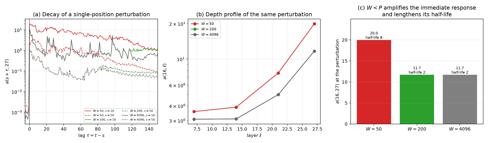
The earlier two-window comparison, for reference: $W=50$ vs $W\ge200$ at $s=16$ and $s=50$, with the depth profile.
Each block states: data, axes (with formulas), curves, reading. All perturbations are FP32, greedy, teacher-forced unless stated.
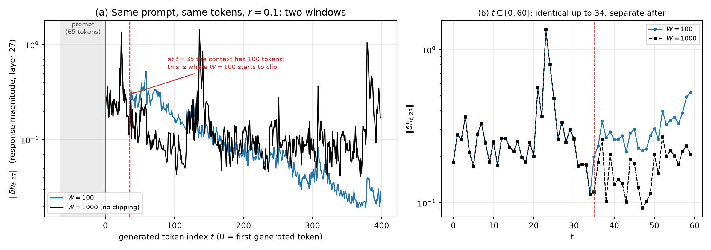
Data. Prompt of $P=65$ tokens. The same 400-token sequence $g_0,\dots,g_{399}$ is used in both runs, so the tokens cannot differ. Prompt perturbation (1.2A) with $r=0.1$, 8 simplex directions. Teacher-forced pass; state read at layer $\ell=27$.
Axes. $x$: generated token index $t$ (negative values = prompt, grey band; $t=0$ = first generated token). $y$: $a(t,27)=\|\delta h_{t,27}\|_2$, median over the 8 directions.
Curves. Blue $W=100$; black $W=1000$ (never clips in 400 tokens, so it is the control). Panel (b) zooms on $t\in[20,55]$.
Reading. The curves are numerically identical up to $t=34$ and separate at $t=35$. $35=W-P=100-65$: at that step the context stops fitting in the window. The weights and the input tokens are identical; only the mask differs. This is a controlled intervention, and it is the cleanest evidence that the rise/decay shape of the response is produced by the window.
Caveat. Qwen2 applies the sliding window only to its last max_window_layers blocks, so
early layers keep full attention. The departure therefore shows up in the last-layer state and
then grows.

Data. Two free-running greedy generations from the same 65-token prompt, $W=100$ and $W=200$. No perturbation: $r=0$. This figure is about text, not about the response.
Axes. $x$: token index (negative = prompt). $y$: fraction of tokens identical to the $W=200$ run, over all positions up to $t$.
Curve. One curve: 1 over the whole prompt (trivially identical), 1 for the first 40 generated tokens, then falling.
Reading. The text is bit-identical for 40 tokens; the first different token is $t=40$. The response departed at $t=35$; five more tokens were needed before the small difference crossed a decision gap. Afterwards the texts never re-converge, so the curve decays to 0.
What it is not. Not a perturbation experiment: $r=0$, only the mask differs.
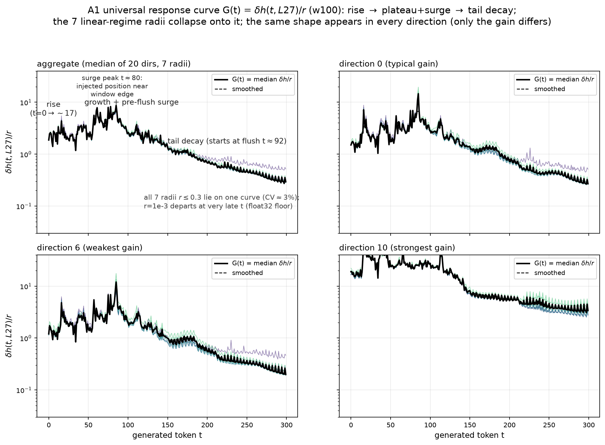
Data. Prompt perturbation, 20 simplex directions, 7 radii $r\in[10^{-3},0.3]$, teacher-forced, layer 27.
Axes. $x$: $t$. $y$: $a(t,27)/r$ (response per unit radius). Thin lines: three individual directions. Thick line: median.
Reading. If the response were proportional to $r$, all curves collapse onto one. They do: the coefficient of variation of $a/r$ across radii is 2–3% (median; p90 ≤ 11%) at every layer and time. Hence $$a(t,\ell;r)=r\,G(t,\ell).$$ Deviations appear only at $r=10^{-3}$ late in the sequence (float32 round-off, $a<10^{-4}$) and at $r\ge0.5$ (D5). This linearity licenses all threshold arithmetic in Part B.
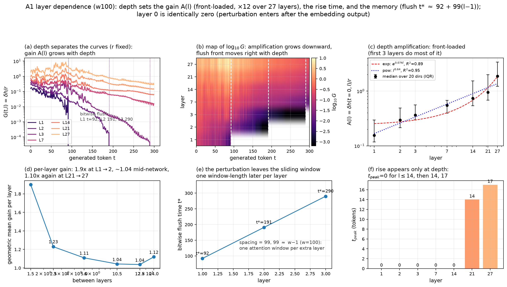
Data. Same run; fixed $r$, all saved layers.
Axes. Left: $x=t$, $y=a(t,\ell)$ for several $\ell$. Right: $x=\ell$, $y$=depth gain $A(\ell)=a(t,\ell)/a(t,1)$ at fixed $t$.
Reading. Early layers respond and decay; deep layers rise, surge before the window flush, then decay. The gain follows $A(\ell)\propto\ell^{0.64}$ ($R^2=0.95$): $0.155$ at L1 to $1.875$ at L27, a factor 12, and it is front-loaded (×1.9 from L1→L2, ×1.04 mid-network, ×1.12 at the end). Depth also sets the rise time and the memory of the perturbation.
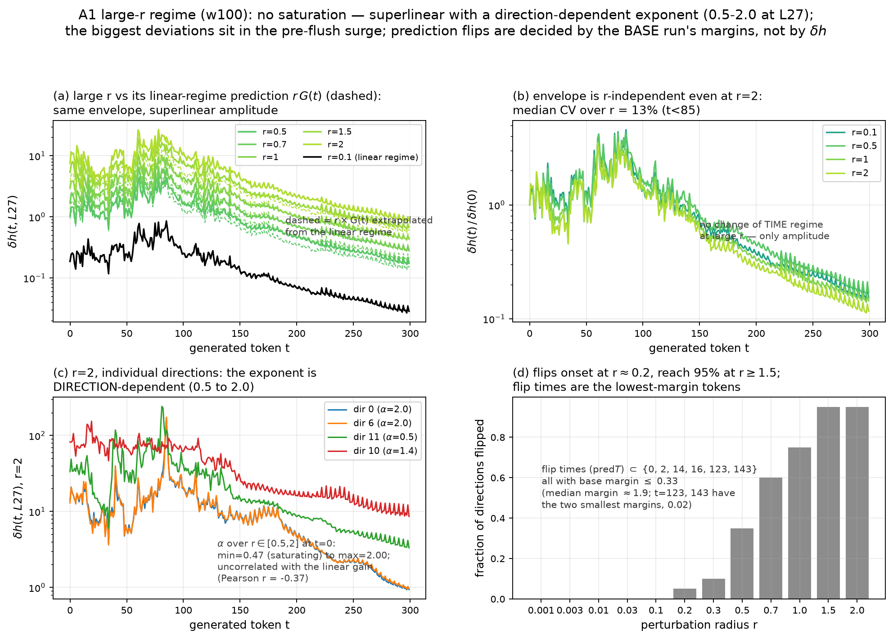
Data. $r=0.1\ldots2$, same directions.
Axes. $x=t$; $y$: response, normalized by its own peak; insets give the fitted exponent.
Reading. No saturation and no new regime: the shape survives (CV 13% for $r\in[0.1,2]$), but the response becomes mildly superlinear. The deep-layer exponent grows from 0.96 (L1) to 1.45 (L27); per direction it spans 0.47–2.0 and is uncorrelated with the linear gain. At $r=2$ the largest response is ≈0.7 of the baseline state norm. This is why extrapolating a threshold from small $r$ fails above $r\approx0.3$ (D5), while re-measuring at the radius of interest does not.
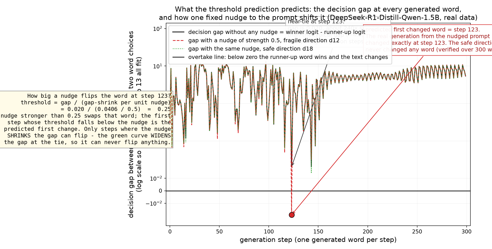
Data. One prompt, one direction, $r=0.5$, teacher-forced. Baseline gap $m_t$ and perturbed gap $m'_t$ are read at every step; $\delta m_t=m'_t-m_t$.
Axes. $x$: $t$. $y$ (log): logit gap. The dashed "overtake" line is $m'_t=0$: where the perturbed gap touches it, the runner-up becomes the winner.
Reading. Most steps have a gap of several logit units; at $t=123$ the baseline gap is $0.020$. A perturbation that shrinks the gap by $0.041$ per unit $r$ gives $r_c=m_t r/|\delta m_t|=0.020/0.041\approx0.25$: any $r\ge0.25$ flips that word. The figure shows the observed flip at exactly that word for $r=0.5$.
What is predicted. Two things from one teacher-forced pass: whether the free run changes any token, and the index of the first changed token. If no $r_c$ falls below $r$, the prediction is "the entire answer is unchanged".
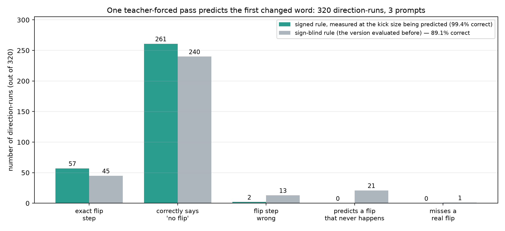
Data. 19 free-run experiments × 20 directions = 380 runs; 320 are evaluable with the signed rule (the childhood prompt has no stored geometry). Three prompts, radii $10^{-4}$–$2$, windows 100/200/500.
Axes. $x$: outcome category. $y$: number of direction-runs out of 320.
Bars. Green: signed rule (1.4) with $\delta m$ measured at the predicted radius. Grey: the earlier sign-blind rule $r_c=m_t/|\delta m_t/r|$.
Reading. Signed: 57 exact flip steps, 261 correct "no flip", 2 wrong steps, 0 false alarms, 0 missed flips = 318/320 = 99.4%. Sign-blind: 45 exact, 240 no-flip, 13 wrong steps, 21 false alarms, 1 miss = 89.1%. The "many outliers" of the earlier scorecard were produced by the sign-blind rule.
Two misses. Both are flips at $t=0$ at $r=1$ and $r=2$: a large perturbation deforms the prompt itself, so the free run's first step is already uncertain while the teacher-forced pass still follows the unperturbed prefix.
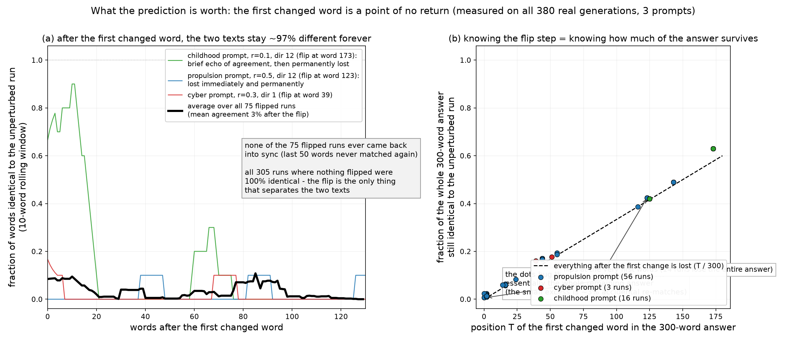
Data. All 75 flipped runs (3 prompts), with the full generated sequences of both the perturbed and the unperturbed run.
Panel (a). $x$: tokens after the first flip. $y$: fraction of tokens identical to the unperturbed run in a rolling 10-token window. Three examples plus the average over 75 flips.
Panel (b). $x$: first-flip position $T_f$. $y$: fraction of the 300-token answer identical, $S=T_f/T$. Points: runs. Dashed line: $y=x/300$.
Reading. After the first flip, agreement stays at 2–3%: 0 of 75 runs ever re-synchronise. The surviving fraction is exactly first-flip position / 300. All 305 runs without a flip are 100% identical. Predicting $T_f$ is predicting how much of the answer survives.
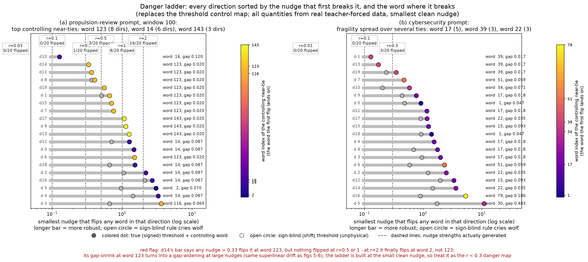
Data. Prompt perturbation, 20 directions, teacher-forced geometry, two prompts. One row per direction.
Axes. $x$ (log): smallest radius $r_*(u)=\min_t r_c(t,u)$ that flips any word. Colour: the token $t$ where that minimum occurs (the controlling close call). Open circles: the same quantity under the sign-blind rule.
Reading. Propulsion prompt: the tie at word 123 (gap 0.020) controls 8/20 directions, word 14 (gap 0.087) 6/20, word 143 (gap 0.020) 3/20; $r_*$ spans 0.128–3.62. Cybersecurity prompt: fragility is spread over words 17/39/22; $r_*$ spans 0.13–10.9. The sign-blind rule halves the apparent threshold for many directions.
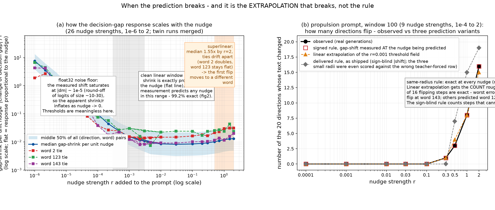
Data. All radii; teacher-forced gains $|\delta m_t|/r$ per direction and step.
Axes. Left: $x=r$ (log), $y=|\delta m_t|/r$ (log). Right: $x=r$, $y$ = number of directions that flip.
Reading. Three regimes. (i) $r\lesssim3\times10^{-4}$: the measured shift is at the float32 round-off ($|\delta m|\sim10^{-5}$), so the apparent gain grows like noise$/r$. (ii) $3\times10^{-3}\lesssim r\lesssim0.3$: gain flat at ≈0.0085, linear. (iii) $r\gtrsim0.5$: gain grows (median ×1.55 by $r=2$) and becomes tie-dependent, so a threshold measured at small $r$ over-predicts: 16/20 at $r=0.5$, 6/20 at $r=1$, 3/20 at $r=2$. This breaks extrapolation, not the rule: re-measuring $\delta m$ at the radius of interest restores 99.4%.
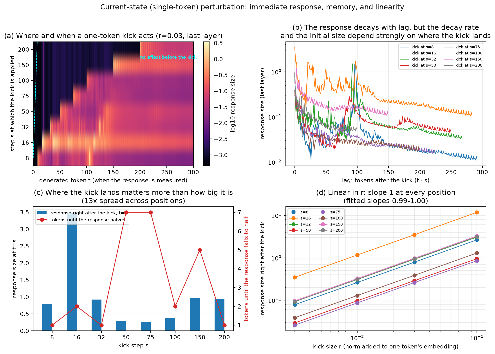
Data. Perturbation (1.2B) at one position $s$, 24 Gaussian directions, radii $3\times10^{-3},10^{-2},3\times10^{-2},10^{-1}$, teacher-forced on the same 300-token sequence, state read at layers 7/14/21/27. Panels (a)–(b): $r=0.03$.
Panel (a). $x=t$; $y=s$; colour $=\log_{10}$ of the median over directions of $a(t,27)$. Cyan line $t=s$: no effect can precede the perturbation.
Panel (b). $x$: lag $\tau=t-s$; $y$: $a(s+\tau,27)$ (log), one curve per $s$.
Panel (c). Bars: $a(s,27)$ at lag 0 for each $s$. Red line (right axis): tokens until the response halves.
Panel (d). $x=r$ (log); $y=a(s,27)$ (log) for each $s$. Slope-1 lines mean linearity; fitted slopes 0.99–1.00.
Reading. (i) Exactly zero for $t
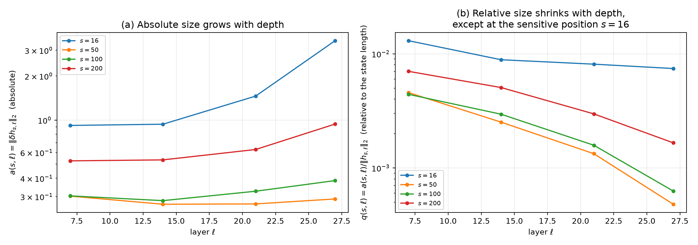
Data. Same run, $r=0.03$.
Panel (a). $x$: layer $\ell$; $y$: $a(s,\ell)=\|\delta h_{s,\ell}\|_2$ (absolute).
Panel (b). $x$: layer; $y$: $q(s,\ell)=a(s,\ell)/\|h_{s,\ell}\|_2$ (relative to the state length).
Reading. Both panels are correct and they answer different questions. The absolute effect grows with depth (the residual stream amplifies it). Relative to the state's own length it shrinks with depth for ordinary positions $\times0.05$–0.09 from L7 to L27, because the state length grows faster. The exception is the sensitive position $s=16$, whose relative effect stays flat (×0.6). A perturbation at a close call is not washed out by depth.
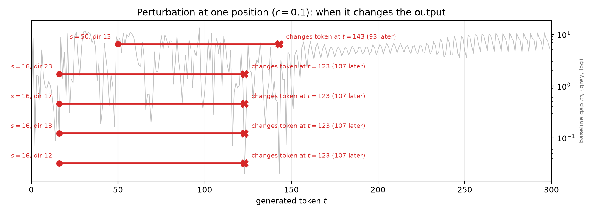
Data. Same run, $r=0.1$. Every (position, direction) pair whose margin condition $\delta m_t\le -m_t$ is met at some $t>s$.
Axes. $x$: generated token $t$. Each horizontal segment starts at the perturbation position $s$ and ends at the token $t$ that first changes. Grey curve (right axis, log): baseline gap $m_t$.
Reading. Five events. All four $s=16$ directions change the token at $t=123$ — 107 tokens after the perturbation — and the one at $s=50$ at $t=143$ (93 later). Nothing happens at $s$. The perturbation sits latent until the model reaches the next close call.

Data. Free-running generations with perturbation at $s=16$ and $s=50$, $r=0.1$, 24 directions, compared with the teacher-forced prediction of C3.
Panel (a). $x$: predicted first changed token (teacher-forced), $y$: observed first changed token (free run). Five events.
Panel (b). $x$: $t$; $y$: fraction of tokens so far identical to the unperturbed run, for one direction. Green line: perturbation position. Red line: first changed token.
Panel (c). Same for all 24 directions at $s=16$: 4 change the text, 20 never do.
Reading. 5/5 exact, including the step: 4 directions at $s=16\to t=123$, 1 at $s=50\to t=143$. After the change, agreement falls to ≈40% and the texts never re-converge. The latency is real, not an artifact of teacher forcing.
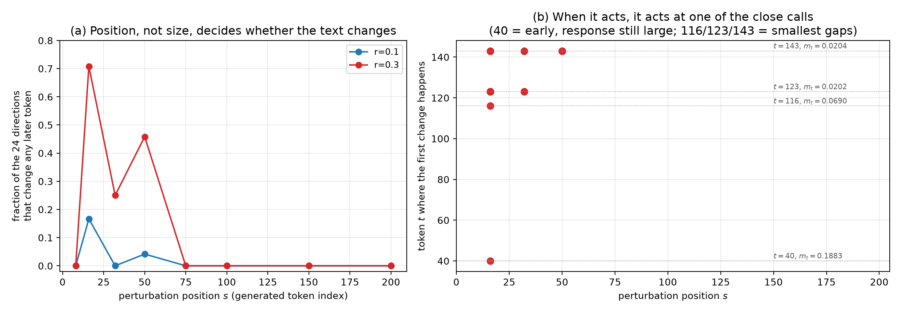
Data. Free runs with a single-position perturbation, 24 directions, at positions $s=8,16,32,50,75,100,150,200$, two radii ($r=0.1$ and $r=0.3$). A "flip" is the first token that differs from the unperturbed run.
Panel (a). $x$: perturbation position $s$; $y$: fraction of the 24 directions that change any later token. Blue: $r=0.1$ (two runs, positions 8–50 and 8–200). Red: $r=0.3$.
Panel (b). A point per (position, direction) that flips: $x=s$, $y$ = token where the first change happens. Dotted lines: near-tie tokens, labelled with their baseline gap $m_t$.
Reading. Position dominates. At $r=0.3$: 17/24 directions flip when the perturbation is at $s=16$, 6/24 at $s=32$, 11/24 at $s=50$, and zero at $s\ge75$. At $r=0.1$ only $s=16$ (4/24) and $s=50$ (1/24) act. When a perturbation acts, it acts at one of four tokens: $t=40$ (early, gap 0.188 but the response is still large) or $t=116/123/143$ (the smallest gaps, 0.069/0.020/0.020). Nothing acts between them. This is the decision-boundary picture at the level of a single token: the perturbation must survive to a place where the product of response and closeness is large enough.
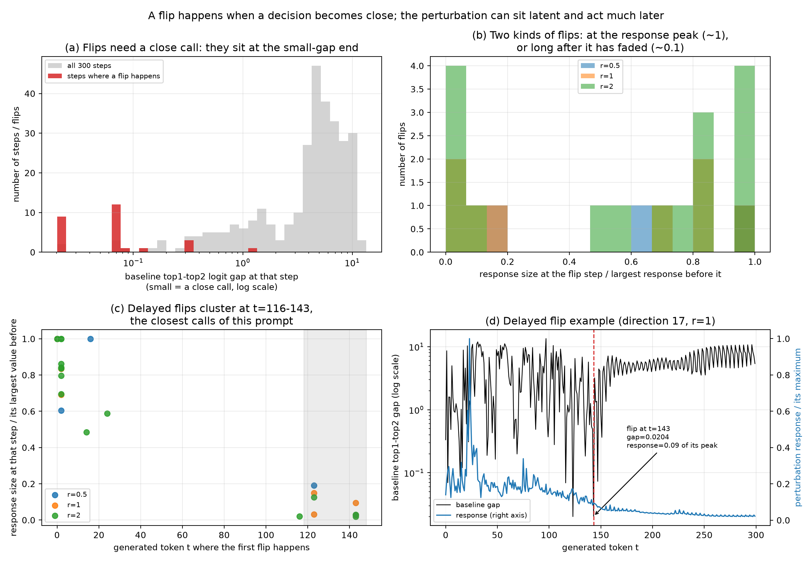
Data. Prompt perturbation; 27 observed free-run flips at $r=0.5,1,2$ (20 directions each); baseline gaps and teacher-forced responses.
Panel (a). $x$: baseline gap $m_t$ (log); $y$: counts. Grey: all 300 steps. Red: steps where a flip happens. Flips sit at the small-gap end (spikes at 0.020 and 0.069).
Panel (b). $x$: response at the flip step divided by its maximum up to that step; $y$: counts. 1 = flip at the response peak; near 0 = response already decayed.
Panel (c). $x$: flip step; $y$: the same ratio. Delayed flips cluster at $t=116$–$143$.
Panel (d). Example: gap (black, log) and response (blue, normalized) vs $t$; red line = flip at $t=143$, gap 0.020, response 9% of its peak.
Reading. 17/27 flips are immediate (at the response peak); 10/27 are delayed — the response has faded but the model reaches a later close call and breaks there. A flip depends on the product of response size and closeness, not on the response alone.
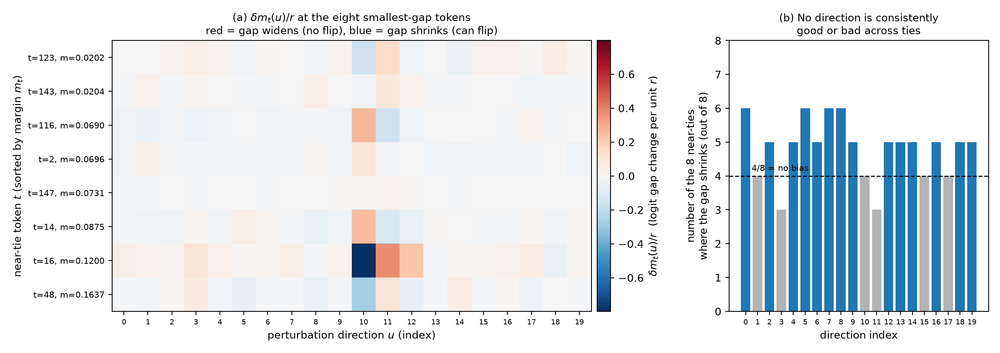
Data. Prompt perturbation at $r=0.3$ (linear regime), 20 simplex directions, teacher-forced. The 8 near-ties are the 8 smallest baseline gaps $m_t$.
Panel (a). Rows: the 8 near-tie tokens, sorted by $m_t$ (labels give $t$ and $m_t$). Columns: direction $u$. Colour: $\delta m_t(u)/r$ — gap change per unit radius. Red $>0$ (widens, no flip), blue $<0$ (shrinks, can flip).
Panel (b). For each direction, the number of the 8 ties where the gap shrinks.
Reading. The sign is not a property of the direction: at $t=123$ seven directions shrink the gap and thirteen widen it; at $t=16$ only four shrink it. Across the eight ties the sign patterns are essentially uncorrelated (mean Spearman $-0.05$), and no direction is negative at more than 6/8 ties. Magnitudes, in contrast, are a stable property of a direction (next figure).
Consequence. "Which direction is dangerous" only makes sense together with the word at which it acts. Magnitude ranks directions; sign ranks (direction, word) pairs.
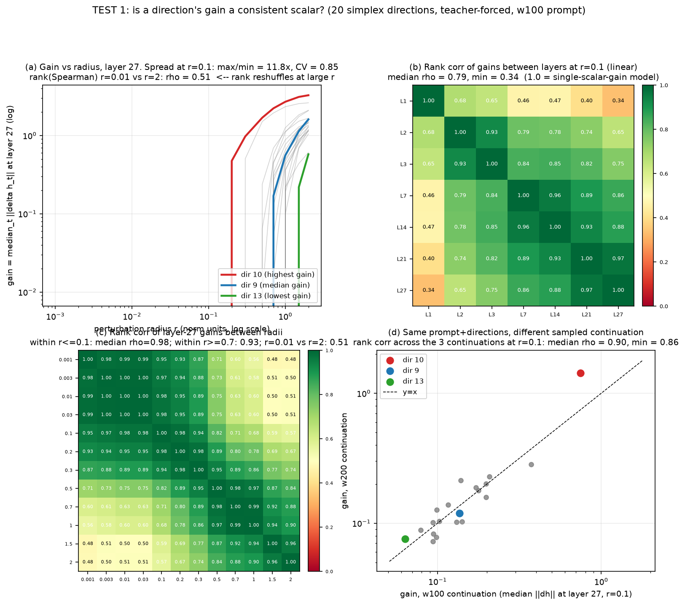
Data. The same 20 directions evaluated on three different continuations of the same prompt (different windows produce different texts), teacher-forced.
Axes. Pairwise rank correlation of per-direction response magnitudes between continuations.
Reading. Rank correlations 0.80–0.98: a strong direction stays strong on a different text. The "hot trio" (directions 10, 11, 12) is hot in all three. So magnitude is a property of the direction; the sign at a particular word is not.
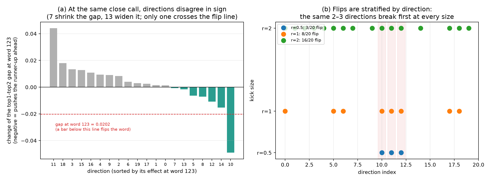
Data. Same geometry; (a) uses $t=123$ and $r=0.3$; (b) uses observed flips at $r=0.5,1,2$.
Panel (a). $x$: directions sorted by their effect at word 123. $y$: $\delta m_{123}(u)$; the dashed line is $-m_{123}$ (the flip line).
Panel (b). $x$: direction index; $y$: radius; markers: directions that flip at that radius.
Reading. At the same close call, different directions push the decision in opposite directions, and only one crosses the flip line. Flips are stratified: at $r=0.5$ exactly the hot directions 10–12 break, at $r=2$ sixteen directions do.
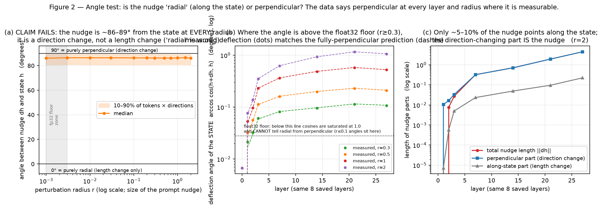
Data. Prompt perturbation, radii $10^{-3}$–$2$; full perturbed and baseline last-layer states are saved for three directions, so the angle is exact.
Panel (a). $x$: $r$ (log); $y$: angle between $\delta h$ and $h$ in degrees. $0^\circ$ = radial (length change), $90^\circ$ = perpendicular (direction change). Grey band: float32 floor, below ≈0.03° the stored cosine rounds to 1 and the angle is not measurable.
Panel (b). $x$: layer; $y$: $1-\cos$ between $\delta h$ and $h$ (log), four radii.
Panel (c). The perturbation split into its component along $h$ and its perpendicular component, vs layer.
Reading. The angle is 86–87° at every radius and layer. In 1536 dimensions two random vectors are also nearly perpendicular (expected angle $\arccos(1/\sqrt d)\approx88.5^\circ$), so the angle alone is trivial; the informative part is panel (c): ≈95% of the perturbation is perpendicular and only 5–8% is along the state. Because the network normalizes length before the logits, only that perpendicular part can change the output. Measured: the logit-gap change tracks the perpendicular length linearly, $|\delta m|\approx4\,b/\|h\|$ with $b$ the perpendicular component.
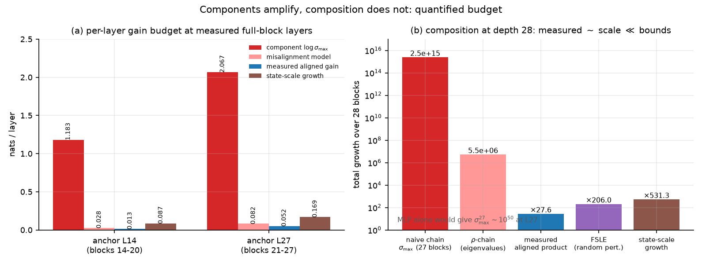
Data. Block Jacobians $J_\ell=\partial h_{\ell+1}/\partial h_\ell$ at a fixed position, 5 layers × 6 tokens; $\sigma_{\max}$ by power iteration, $\rho$ by ARPACK.
Axes. Per layer: $\sigma_{\max}$ (worst one-step amplification), $\rho$ (asymptotic growth if the same map were repeated), $\kappa=\sigma_{\max}/\rho$, the principal angle between consecutive top singular subspaces, and the measured aligned gain of the product.
Reading. $\sigma_{\max}$ reaches 95–195 at layer 0 and 6–9 at layer 27, yet the measured product is far below both the naive chain $\prod\sigma_{\max}$ (by ~13 orders) and $\prod\rho$ (by ~5). The reason is rotation: consecutive amplification directions differ by 83.6° on average, so gains cannot compound. The budget $(\sigma-1)\cos^2\theta$ reproduces the measured chained gain within a factor ≲2.
Important. This is a statement about a fixed position. The full prompt perturbation also travels across positions through attention and grows. The two statements are not contradictory, but must not be conflated. It also means the earlier sentence "the depth expansion is only radial scale drift" was wrong and has been retracted.
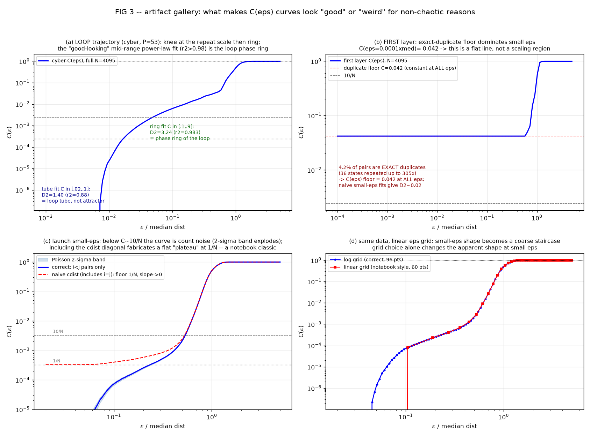
Data. Last-layer states of long generations (4000 tokens), first-layer states, synthetic controls.
Axes. $x$: $\varepsilon$ divided by the median pairwise distance (log). $y$: $C(\varepsilon)$ from 1.4 (log). Dashed lines $1/N$ and $10/N$: below them the estimate is dominated by finite sampling.
Panels. (a) A near-exact repetition loop: knee plus "ring", fittable with $r^2=0.999$. (b) First-layer states contain 352,035 exact duplicate pairs, giving a flat floor $C=0.042$ at every $\varepsilon$. (c) A naive computation including $i=j$ pairs and/or a linear $\varepsilon$ grid produces a staircase. (d) Same data on linear vs log grid.
Reading. All four shapes are artifacts of the data or the estimator, not evidence of a low-dimensional attractor. On non-loop trajectories the whole rise of $C$ spans 0.16–0.19 decades, and the interval that is both below $2\log_{10}N$ and above $10/N$ is 0.00–0.04 decades wide: no plateau exists. The estimator is not at fault — at the same $N$ it recovers Hénon ($D_2=1.157$) and Lorenz ($D_2=1.984$).
Update (16 fresh 1000-token trajectories). 0 of 64 (trajectory × $N$ × Theiler) configurations
contain a slope-stable interval inside the legal band. Eight of the sixteen trajectories are
quasi-loops with periods 12–81 and narrow relative distance (0.018–0.035 of the cloud scale); they
have wide "plateaus" that are loop knees. The eight non-repetitive ones have an ER-legal width of
0.000 decades. Predictability with $k$-nearest neighbours replicates only on the eight
quasi-loops (NSE gaps +0.27…+0.67 over surrogates); on the eight non-repetitive ones the gap is
+0.018 (median) versus MIAAFT and +0.002 versus a linear ridge, i.e. nothing. The earlier
launch lead does not replicate. Two surrogate-implementation bugs were found and fixed in that
pass, so older MIAFT-based numbers should be re-checked; the clean statement is the one above.
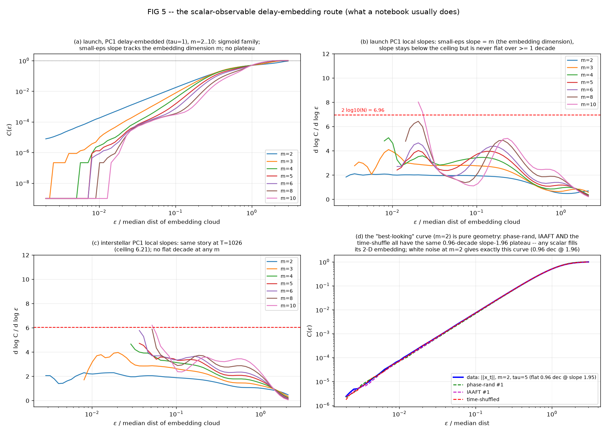
Data. Delay embedding of the same trajectories, $m=2\ldots10$, with white-noise and phase-randomised controls.
Axes. $x$: embedding dimension $m$; $y$: estimated $D_2$.
Reading. At $m=2$ the curve looks textbook (slope 1.95 over 0.96 decades, $r^2=0.999$), but white noise at $m=2$ gives the identical curve: it is the fill dimension of any 2-D cloud. The estimate rises with $m$ and never saturates below the surrogate band.
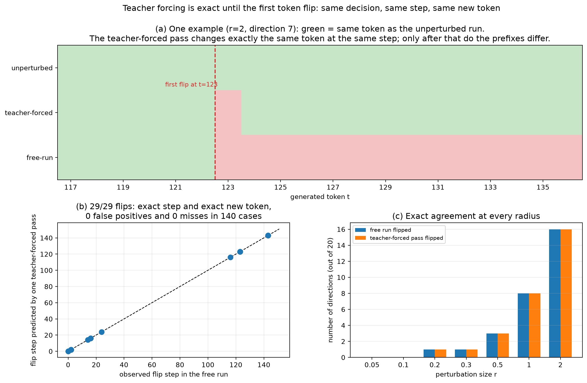
Data. 140 teacher-forced predicted sequences compared with free runs (20 directions × 7 radii).
Panels. (a) timeline of one example around the flip; (b) predicted vs observed first flip step; (c) flip counts per radius.
Reading. 29/29 flips agree in step and token, 0 false positives among 111 no-flip cases. The first two panels are trivial by construction: a token cannot differ before the first difference. The only non-trivial content is panel (b)'s exactness of the predicted token: one teacher-forced pass also gets the new word right. After the flip the comparison is meaningless because the prefixes differ.
For an autonomous map $x_{n+1}=F(x_n)$, the maximal Lyapunov exponent is $$\lambda=\lim_{n\to\infty}\frac1n\log\|DF^n(x_0)\,\delta_0\| .$$ It is a property of the invariant measure, independent of $x_0$ and $\delta_0$ almost surely.
Three things separate our measurement from this.
What the data support: - the finite-time response is linear in $r$ up to $r\approx0.3$ and transient; - $\lambda(t)=\frac1t\log(a(t)/a(0))$ is positive early and turns negative: a transient, not sustained stretching; - the depth product at a fixed position contracts relative to the state scale, while the full response grows through cross-position mixing; - the actual mechanism of unpredictability is a decision-boundary crossing at a close call, not exponential separation of nearby trajectories.
The stable-chaos test in Part 2.0 settles the question empirically. Four independent signatures reject exponential separation: flip times sit on a handful of discrete margin dips ($p<5\times10^{-6}$ under a continuous-separation null); the fitted hazard varies by ~90× with $r$ and its confidence interval includes zero for $r\le0.5$; the perturbation norm never grows ($\le1.02$); and there is a hard floor ($r\le0.1$ never flips in 300 tokens).
The rate itself is negative. In 31 configurations (layers, radii, windows, prompts), the sustained stretching rate over $t>150$ has 0/31 positive point estimates and 0/31 direction-bootstrap CIs touching zero; the best estimate is −0.0043 nats/token [−0.0055, −0.0030]. A synthetic expanding map with a true rate of +0.035 is recovered cleanly by the same pipeline, so the method has the power to see one. The correct statement is: no positive Lyapunov exponent is detectable in this system at these scales; the unpredictability is a finite-amplitude threshold crossing.
If a Lyapunov-like number is wanted, the honest report is a finite-time exponent with horizon and window stated, e.g. "$\lambda(t=50)=0.032$ nats/token at $W=100$, reference $t_0=5$", never a bare "Lyapunov exponent".
Trivial (implied by the definitions). - Tokens are identical until the first flip; that is the definition. The teacher-forcing figure is a sanity check. - Small perturbations produce a response proportional to their size: any differentiable map does. - In 1536 dimensions two random vectors are nearly perpendicular; the angle test alone says nothing. What matters is the split into along-state and perpendicular components and the linear relation between the perpendicular part and the logit change. - The state norm grows with depth in a residual network. - The output is invariant to the state's length (normalization).
Not trivial (measured, not implied). - The stable-chaos regime: flips at 8 discrete margin dips ($p<5\times10^{-6}$), a hazard with a confidence interval containing zero, a non-growing perturbation norm, and a hard floor at $r\approx0.13$. - The quantitative threshold law: one teacher-forced pass predicts the first changed word in 318/320 cases including all 70 borderline calls, with zero false alarms; part 2.0 shows the survival curves are reproduced with zero fitted parameters at $r\le0.25$. - The window law $D=W-P$, exact to the token on two prompts and five window sizes with identical inputs; and the text needs 4–6 extra tokens to split. - The survival law: after a flip the text never re-converges, so the surviving fraction is exactly $T_f/T$. - The latency: perturbations can act 100+ tokens later at the next close call, confirmed autoregressively. - Direction structure: magnitudes stable across texts (rank correlation 0.8–0.98) while signs at a given word are not (mean correlation $-0.05$); flips are stratified by direction. - The layer-resolved amplification: none at an ordinary position, ≈3× at a sensitive one, concentrated in the last layers. - The rotation mechanism: components amplify ($\sigma_{\max}$ up to 195) yet the product does not, because the amplifying direction rotates by 84° per layer; the budget $(\sigma-1)\cos^2\theta$ closes the gap within a factor 2. - The negative D2 result with a working positive control (Hénon/Lorenz).
batch-dirs=1.| run | contents | used in |
|---|---|---|
a1_ds_w100_layers |
12 radii × 20 dirs × 8 layers, 300 tokens | A3, A4, A5, B, E, F |
window_fixed/w{100,150,200,300,1000} |
same tokens, five windows, 400 tokens | A1 |
window_cyber/w{100,200,1000} |
second prompt, same protocol | A1 (law) |
a1_ds_w100_layers/free_run_* |
free runs, 20 dirs, $r=0.05\ldots2$ | B2, B3, D |
state_deep_emb |
8 positions × 24 dirs × 4 radii × 4 layers | C1, C2, C3 |
state_deep_L14 |
layer-14 injection | C2, Part 5 |
state_freerun_r0.1, r0.3 |
free runs with a single-position perturbation | C4 |
long_traj*, long_traj_2k, long_traj_4k |
1000–4000-token trajectories, window 4096 | G |
nonnorm_w100_big |
$\sigma_{\max},\rho,\kappa$, principal angles | F |
Protocol invariants. FP32; greedy; no repetition penalty; the unperturbed reference is a duplicate row in the same batch and is verified bit-identical; teacher-forced passes use the unperturbed token sequence; free runs are used only where stated.
Reproducing. Every figure comes from a script in scripts/; the per-topic reports with exact
numbers are under results/. The figures in this document are in notebook/figures/, produced by
scripts/notebook_figs_window.py, scripts/notebook_figs_state.py,
scripts/notebook_fig_directions.py, and copied from results/figures/.